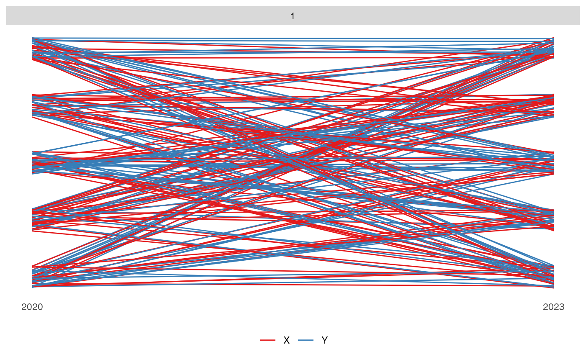
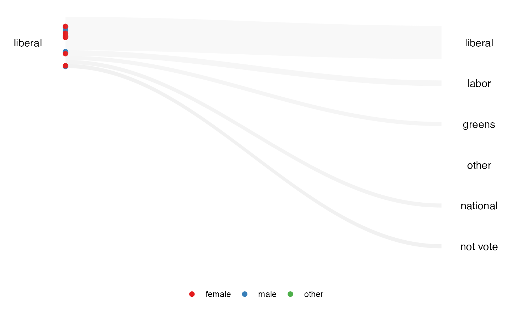

The inspiration for this package comes from the NY Times animated plot. The challenge of reproducing the animation is the amount of code required. This package tries to solve that by reducing it to only three steps. This package also adds a new element of proportional shaded area.
First stage: Prepare the data
In this stage, we first need to transform the data into the categorized format. This function will calculate the scaling based on the argument the user provided.
The data needs to contain the following variable for the function to work:
- data:
dbl_change, A data frame that contained the numerical values. - id:
id, needs to be a factor variable. - values:
values, needs to be a numeric variable. - time:
time, needs to be an integer variable.
categorized_dbl <- anim_prep(data = dbl_change,
id = id,
values = values,
time = time)There are also additional options that allow the user to customize.
- group: the column name that distinguishes between the values group.
- ncat: the number of categories to be created for scaling values.
- breaks: a vector for creating a bins.
- label: a vector to provide a label to the qtile.
- group_scaling: the column name used for grouping the variable before scaling.
- scaling: the scaling method.
The function can calculate four different scales using these options.
# rank scaling
rank_scaling <- anim_prep(data = dbl_change,
id = id,
values = values,
time = time)
# absolute scaling
absolute_scaling <- anim_prep(data = dbl_change,
id = id,
values = values,
time = time,
scaling = "absolute")
# rank scaling by group
rank_group_scaling <- anim_prep(data = dbl_change,
id = id,
values = values,
time = time,
group_scaling = gp)
# absolute scaling by group
absolute_group_scaling <- anim_prep(data = dbl_change,
id = id,
values = values,
time = time,
group_scaling = gp,
scaling = "absolute")
rank_scaling
#> # A tibble: 400 × 4
#> id time qtile label
#> <fct> <int> <int> <chr>
#> 1 1 2020 3 3
#> 2 2 2020 2 2
#> 3 3 2020 4 4
#> 4 4 2020 3 3
#> 5 5 2020 2 2
#> 6 6 2020 2 2
#> 7 7 2020 4 4
#> 8 8 2020 4 4
#> 9 9 2020 3 3
#> 10 10 2020 4 4
#> # ℹ 390 more rowsThis function will return a categorized data.
Second stage: Plotting the data
After preparing the data, we can now plot it. There are three plots available in this package:
-
kangaroo, which plots the observation’s movement over time. -
wallaby, which subset the plot to eithertoporbottomand see which group they are in after the observational period. -
funnel_web_spider, which is a faceted plot by time variable.
dbl_categorized <- anim_prep(data = dbl_change,
id = id,
values = values,
time = time,
group = gp)
# kangaroo plot
kangaroo_plot(dbl_categorized)
#> You can now use the animbook::anim_animate() function to
#> transform it into an animated object
# wallaby plot
wallaby_plot(dbl_categorized)
#> You can now use the animbook::anim_animate() function to
#> transform it into an animated object
# funnel web spider plot
funnel_web_plot(dbl_categorized)
The kangaroo and wallaby plots can be
animated using the function of the next stage.
funnel_web_spider only supported static plot. We can also
choose whether we want to animate the plot using gganimate or
plotly.
Third stage: Animating the plot
To animate the plot, we need to save the plot into an object, which then can be passed on to the function.
aeles_cat <- anim_prep_cat(data = aeles, id = id, values = party, time = year, group = gender)
p <- wallaby_plot(aeles_cat)
#> You can now use the animbook::anim_animate() function to
#> transform it into an animated object
p2 <- anim_animate(p)
#> You can now pass it to gganimate::animate().
#> The recommended setting is nframes = 89
gganimate::animate(p2)